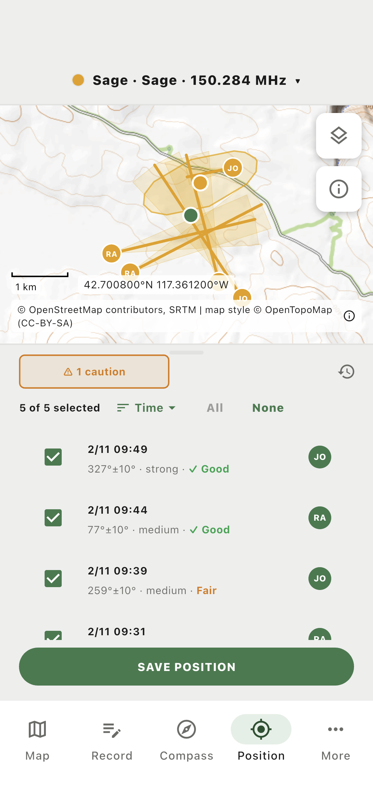
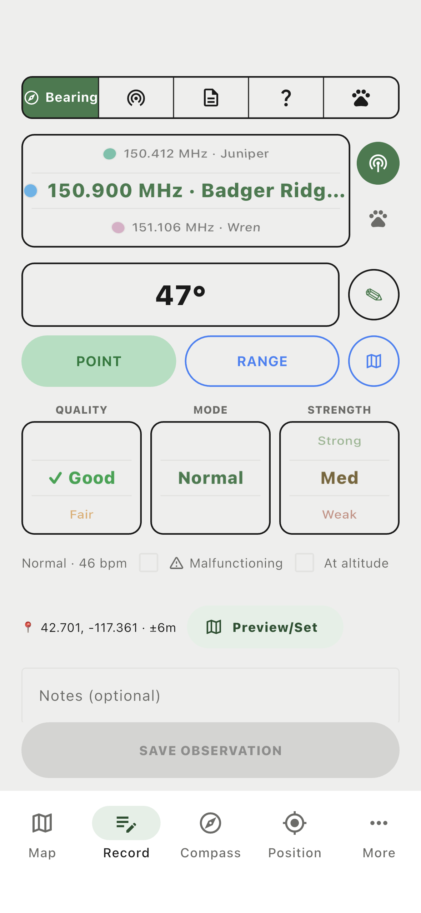
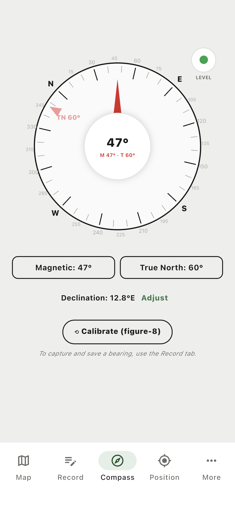
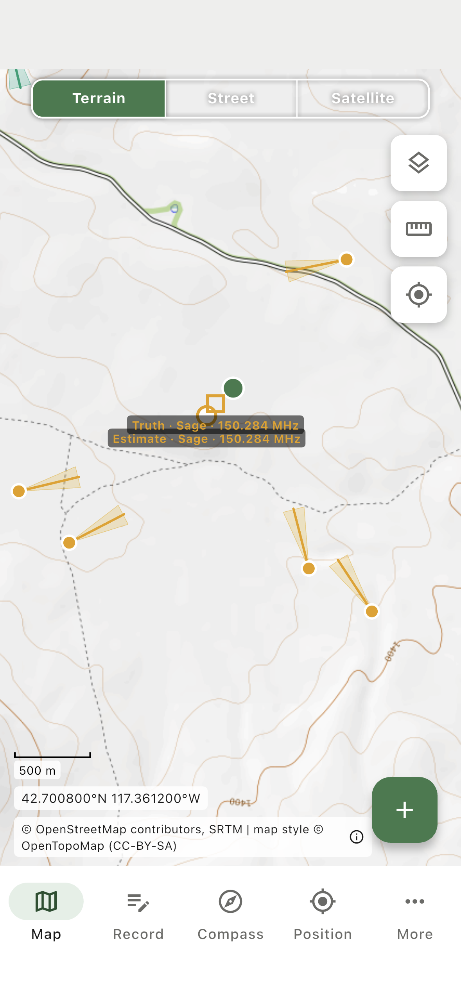
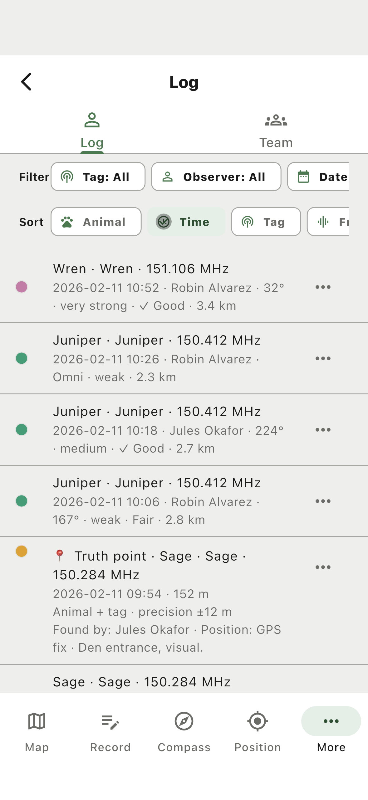

TriTrack records VHF telemetry bearings on a phone and turns them into position estimates in the field, while the crew is still standing there. It works fully offline. When a connection comes back, everyone’s records merge into one project.
The estimate is fitted from the bearings you select and drawn with its error ellipse, then saved as a record of its own. A position can be re-examined a season later against the observations that produced it. Every value on the screen came from something somebody wrote down.

Swing the antenna, read the compass, and save it against the collar you are on. Position and precision come from the phone.
More stations, or a second observer working the same collar from a different hillside. Each one stands on its own.
Choose which bearings to use and the app fits an estimate, with an error ellipse from the uncertainties you recorded.
The estimate is saved alongside the bearings that produced it. Both stay readable, and either can be re-opened later.
No cell service, cold hands, a truck radio, and someone reading numbers aloud from a receiver. Recording a bearing is one screen.
Bearing spread, GPS precision and signal quality are recorded per observation. A weak, doubtful bearing stays visibly weak and doubtful.
Observations are never overwritten in place. Superseded values stay readable, and a truth point can be entered when an animal is actually found.
Most of a field day happens here: read the antenna, save the bearing, and check it against the ground you are standing on.
Pick the collar, enter the bearing, set quality and strength. Position is captured automatically with its precision.

Magnetic and true shown together, declination applied from the current position, and a level indicator for the antenna.

Terrain, street or satellite, downloaded ahead. Shading is predicted radio coverage from elevation data.


Each person records independently, offline, all day. Back at the truck or the bunkhouse the project merges: per record, the newest edit wins, and anything overwritten on a device stays visible.
Projects have owners, contributors and viewers. A collaborator joins with a code the owner issues and approves, so nobody is handed a file.
TriTrack is pre-release and is being tested against real telemetry work rather than a lab bench. I am looking for a crew willing to use it on an actual season and tell me where it gets in the way. In exchange you get direct input into how it behaves, and a tool shaped around the way your team already works.
Michael W. Shafer · Northern Arizona University · michael.w.shafer@gmail.com